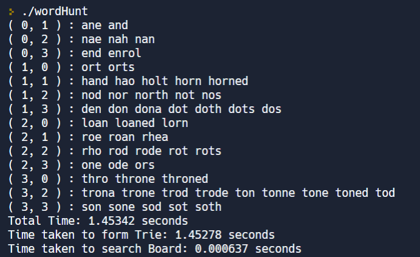

Play Word Hunt using Trie (C++)
April 2021
EN.601.220 Intermediate Programming
Objectives:
Skills Applied:
Comments:
This was the first time I used function overloading in coding, which I found fascinating. I was able to redefine how to compare customized objects, assign attributes, and generating meaningful outputs in an organized manner. It became clearer to me that computer science is highly relevant to the information circulating in the real world. By building a data structure that solves the basic units, we can tackle problems of much greater scale.
Image Credit: Vishal Khatal's Blog

The trie dictionary structure.

A sample run of a Word Hunt Game.